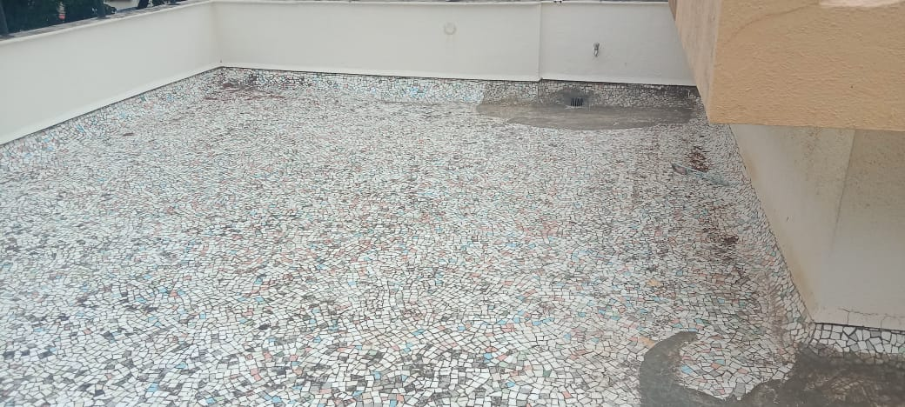
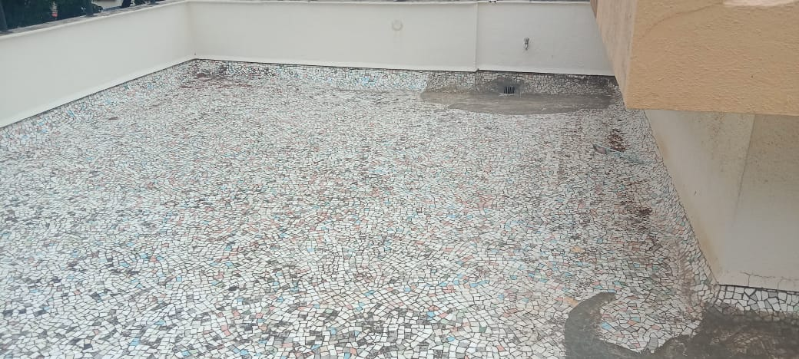
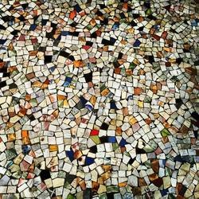
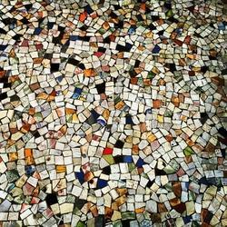

China Mosaic Waterproofing
Specialized waterproofing for china mosaic tiled surfaces.
Why China Mosaic Waterproofing Is Important
China mosaic surfaces have multiple joints that allow water seepage if untreated.
Materials Used
• Colourless PU coating
• Epoxy grouts
• Joint sealants
• Surface cleaners
Our 5-Step China Mosaic Waterproofing Process
Step 1: Joint inspection.
Step 2: Deep cleaning.
Step 3: Epoxy joint sealing.
Step 4: Transparent coating application.
Step 5: Curing and testing.
Project Image Gallery
 


 

Frequently Asked Questions
1. Tile removal required?
No.
No.
2. Transparent finish?
Yes.
Yes.
3. Life?
5–7 years.
5–7 years.
4. Slip resistant?
Yes.
Yes.
5. Terrace suitable?
Yes.
Yes.